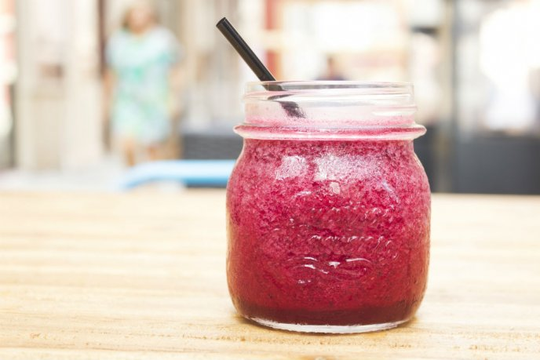

◖Coffrey◗
Frappe and rasperry
Ingredients:
16 grams of Tea Forté Raspberry Nipple Tea
7 ounces of boiling water
Sweetener to taste (sugar, stevia or honey)
Ice
Base for frappé
Raspberries
Preparation:
Put 16 grams of Tea Forté Raspberry Herbal Tea in an infuser or teapot.
Add 7 ounces of boiling water and sweetener to taste.
Wait 5 minutes.
Blend the infusion with ice and the base for frappé.
Serve and garnish with raspberries.
